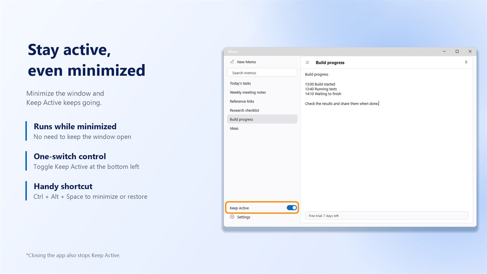

Last updated: November 27, 2026
Start with the built-in Windows settings
You can change how long Windows waits before sleeping. On Windows 11, open Settings → System → Power & battery → Screen & sleep. On Windows 10, open Settings → System → Power & sleep.
On a work PC, the times may be set by your organization’s policy and cannot be changed.
If you want software
- PowerToys Awake: a feature of Microsoft’s PowerToys utilities. It keeps the PC awake without changing your power and sleep settings. It suits long-running jobs.
- ActiveMemo: keeps your PC active while idle to reduce interruptions from sleep and screen-off. It includes local notes, so you can write while reading, watching a seminar, or sitting in a meeting.
- Other free tools: there are many sleep-prevention tools. Check the publisher and reviews before installing.

A quick guide
| What you want | Try |
|---|---|
| Keep the PC awake for a set time (long jobs, downloads) | Windows settings, or PowerToys Awake |
| Keep the PC from stopping while you read, attend seminars, or sit in meetings, and take notes too | ActiveMemo |
| Use a laptop with the lid closed | The Windows power option "When I close the lid" (not what ActiveMemo is for) |
If you only need to keep the PC awake, PowerToys Awake may be enough, and then it is all you need.
ActiveMemo’s Keep Active
- It starts turned on. Use the switch at the bottom left to turn it on or off.
- It keeps working when minimized. Press Ctrl + Alt + Space to minimize or restore the window.
- Try every feature free for 7 days.
What ActiveMemo cannot do
Before you start
- Keep Active does not work while your PC is asleep or the screen is locked.
- Closing the app with the × button also stops Keep Active.
- How long a status such as Teams stays green can vary with your setup and your organization's settings.
- Please follow your employer's or organization's rules. We do not recommend using it to misrepresent your working status.
FAQ
Are sleep and screen-off different?
In general, sleep (the PC enters a low-power state) and screen-off (the display turns off) are separate settings. ActiveMemo reduces interruptions from sleep and screen-off.
Does it work after I put the PC to sleep myself?
No. Keep Active does not work while the PC is asleep.
Is it free?
Every feature is free for 7 days from the first launch. To keep using it after that, you need ActiveMemo Pro (a subscription). Without Pro you can still view, copy, and export your existing notes.